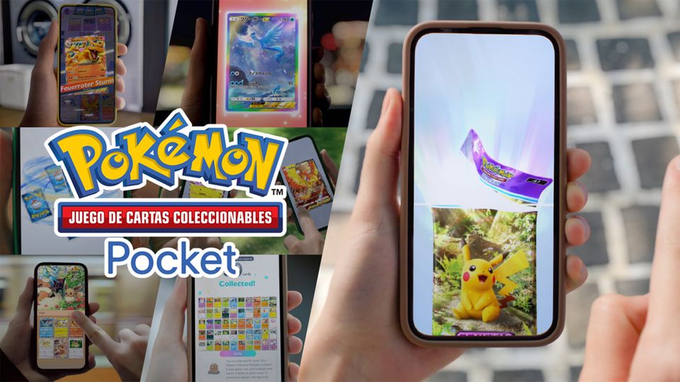
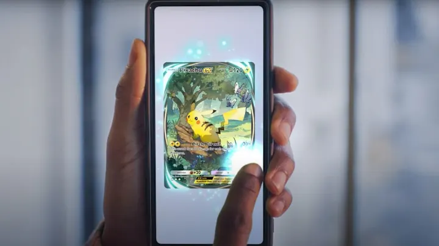
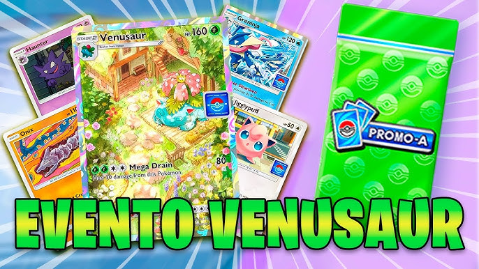

Pokémon TCG Pocket
El universo de Pokémon se ha expandido una vez más con el lanzamiento de Pokémon TCG Pocket, el nuevo juego de cartas coleccionables digital de Nintendo. Diseñado para dispositivos iOS y Android, este juego busca capturar la esencia del clásico TCG de Pokémon, haciéndolo más accesible que nunca para una nueva generación de entrenadores y coleccionistas. Con una experiencia más casual y amigable, Pokémon TCG Pocket está dirigido tanto a los fans de toda la vida como a aquellos que están comenzando su viaje en el mundo de los juegos de cartas coleccionables.
Una Experiencia Rediseñada para Dispositivos Móviles
A diferencia de los TCG clásicos, donde las cartas físicas son esenciales, Pokémon TCG Pocket está diseñado para llevar toda la acción al móvil. Esto significa que puedes coleccionar cartas, crear mazos y batallar contra otros entrenadores sin tener que preocuparte por almacenar cartas físicas o por estar siempre cerca de una mesa de juego. La adaptación digital también permite a los jugadores acceder a cartas exclusivas y eventos especiales, con la posibilidad de jugar en cualquier lugar y en cualquier momento.
Jugabilidad: Lo Clásico y lo Nuevo
La mecánica principal sigue siendo fiel al Juego de Cartas Coleccionables Pokémon original, pero con algunas novedades pensadas específicamente para la versión digital. En Pokémon TCG Pocket, los jugadores podrán disfrutar de una mezcla de cartas clásicas que todo fan reconocerá, así como de nuevas cartas y habilidades exclusivas de la plataforma móvil.
Modo Casual: Los jugadores más nuevos tienen la oportunidad de jugar sin preocuparse por las complejidades competitivas. El modo casual ofrece enfrentamientos relajados, permitiendo a los jugadores aprender a su propio ritmo.
Modo Competitivo: Para los entrenadores más experimentados, existe un modo competitivo donde podrán enfrentarse a otros jugadores de alto nivel, participar en torneos y conseguir recompensas únicas.
Colección de Cartas y Expansiones
Como en cualquier TCG, la colección de cartas es el corazón del juego. Pokémon TCG Pocket ofrece expansiones regulares, agregando constantemente nuevas cartas al universo del juego. Estas expansiones incluyen tanto cartas clásicas (para los nostálgicos que quieren volver a capturar la magia de los primeros sets), como cartas completamente nuevas que traen nuevas estrategias y desafíos al campo de batalla.
Cartas Legendarias: Las cartas de Pokémon legendarios siempre son las más codiciadas, y Pokémon TCG Pocket no es la excepción. Estas cartas traen consigo habilidades especiales que pueden cambiar el rumbo de una batalla.
Cartas Brillantes y Alternativas: Las versiones brillantes y las artes alternativas ofrecen una nueva forma de personalizar la colección y muestran el arte detallado y maravilloso de la franquicia.

Eventos y Torneos en Línea
Uno de los aspectos más atractivos de Pokémon TCG Pocket es la posibilidad de participar en eventos y torneos online. Nintendo organiza de forma regular eventos temáticos, donde los jugadores pueden ganar cartas exclusivas, objetos cosméticos y otros premios. Estos torneos no solo están dirigidos a los jugadores más competitivos, sino que también hay eventos casuales para todos aquellos que simplemente quieran divertirse y probar nuevos mazos.
Eventos Especiales: Algunos eventos están inspirados en las temporadas y regiones de Pokémon. Por ejemplo, se han realizado torneos tematizados en la Región Galar donde los jugadores solo podían usar Pokémon de esa región, lo cual aporta una capa de estrategia y variedad.
Conclusión: Un Juego de Cartas para Todos
Pokémon TCG Pocket es una emocionante adición al mundo de los juegos de cartas de Pokémon. Con su accesibilidad en dispositivos móviles, mantiene viva la esencia del juego clásico mientras lo moderniza para la nueva era digital. Ya seas un coleccionista apasionado, un competidor serio o simplemente alguien que ama la franquicia, Pokémon TCG Pocket tiene algo para ofrecerte. Prepara tu mazo, desafía a tus amigos y descubre un nuevo mundo de estrategias en la palma de tu mano.
¡Descarga la aplicación y empieza tu aventura hoy mismo!